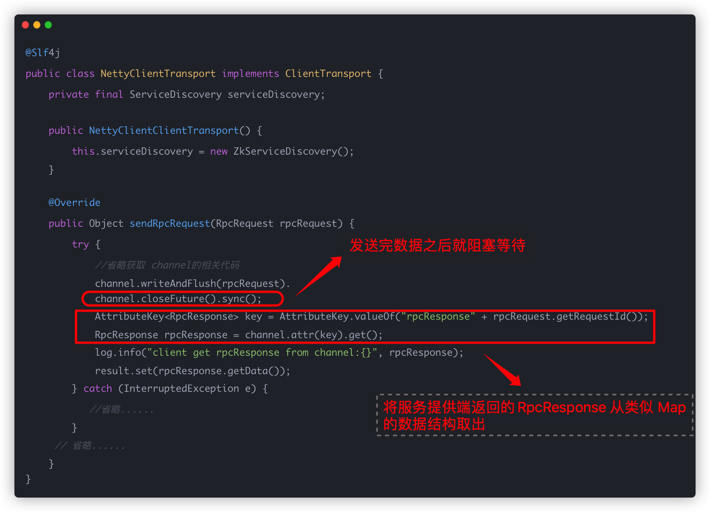
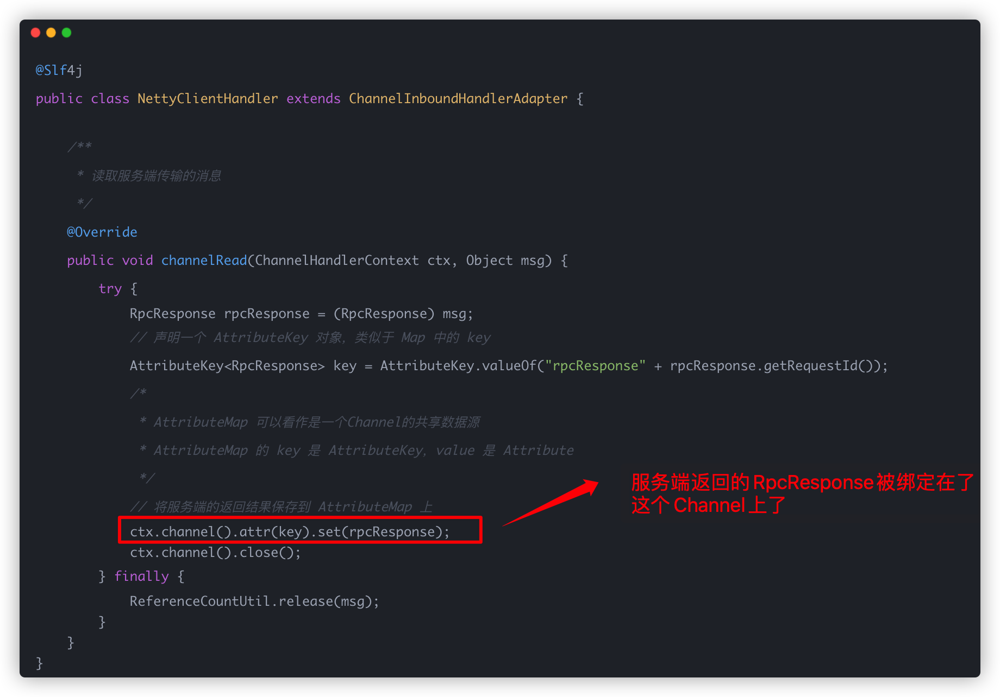

前言
这里对应傻逼guide的“优化”部分
所谓的优化就是加上了CompletableFuture
分析
我们看之前的代码

这里是手动阻塞等待，不行
然后这边要获得就是

这里就是把atrributemap绑定到channel里了
不行，每次都要手动阻塞
优化-存
修改之后，用哪个什么什么future
@Override
public Object sendRpcRequest(RpcRequest rpcRequest) {
// build return value
CompletableFuture<RpcResponse<Object>> resultFuture = new CompletableFuture<>();//这个异步操作的结果是一个包含泛型类型为 Object 的 RpcResponse 对象。
// get server address
InetSocketAddress inetSocketAddress = serviceDiscovery.lookupService(rpcRequest);//使用 serviceDiscovery（服务发现）查找并获取RPC请求的服务地址。
// get server address related channel
Channel channel = getChannel(inetSocketAddress);//通过 getChannel 方法获取与指定服务器地址关联的 Channel。
if (channel.isActive()) {
// put unprocessed request
unprocessedRequests.put(rpcRequest.getRequestId(), resultFuture);//将 RPC 请求放入未处理请求的集合中，以便后续处理响应。
RpcMessage rpcMessage = RpcMessage.builder().data(rpcRequest)
.codec(SerializationTypeEnum.HESSIAN.getCode())
.compress(CompressTypeEnum.GZIP.getCode())
.messageType(RpcConstants.REQUEST_TYPE).build();
channel.writeAndFlush(rpcMessage).addListener((ChannelFutureListener) future -> {
if (future.isSuccess()) {
log.info("client send message: [{}]", rpcMessage);
} else {
future.channel().close();
resultFuture.completeExceptionally(future.cause());
log.error("Send failed:", future.cause());
}
});
} else {
throw new IllegalStateException();
}
return resultFuture;
}我们看啊，它先是,创建了一个CompletableFuture对象，这个对象又存储了RpcResponse，也就是说你的响应会存到这个里面
CompletableFuture<RpcResponse<Object>> resultFuture = new CompletableFuture<>();//然后他把这个放到了未处理的map里
unprocessedRequests.put(rpcRequest.getRequestId(), resultFuture)这个类的代码： 其实就是包装了一个map，加上一个方法调用future.complete
public class UnprocessedRequests {
private static final Map<String, CompletableFuture<RpcResponse<Object>>> UNPROCESSED_RESPONSE_FUTURES = new ConcurrentHashMap<>();
public void put(String requestId, CompletableFuture<RpcResponse<Object>> future) {
UNPROCESSED_RESPONSE_FUTURES.put(requestId, future);
}
public void complete(RpcResponse<Object> rpcResponse) {
CompletableFuture<RpcResponse<Object>> future = UNPROCESSED_RESPONSE_FUTURES.remove(rpcResponse.getRequestId());
if (null != future) {
future.complete(rpcResponse);//调用 future.complete(rpcResponse)，将 rpcResponse 设置为 future 的结果。此时，与 future 相关的任何代码，例如使用 future.get() 或注册回调，都将得到这个完成的 RPC 响应作为结果。
} else {
throw new IllegalStateException();
}
}
}然后直接返回了
return resultFuture;这个resultFuture里就有response了
优化-处理
@Override
public void channelRead(ChannelHandlerContext ctx, Object msg) {
try {
log.info("client receive msg: [{}]", msg);
if (msg instanceof RpcMessage) {//判断接收到的消息是否是RpcMessage类型
RpcMessage tmp = (RpcMessage) msg;
byte messageType = tmp.getMessageType();//获取RpcMessage中的messageType字段，用于确定消息的类型
if (messageType == RpcConstants.HEARTBEAT_RESPONSE_TYPE) {
log.info("heart [{}]", tmp.getData());
} else if (messageType == RpcConstants.RESPONSE_TYPE) {
RpcResponse<Object> rpcResponse = (RpcResponse<Object>) tmp.getData();
unprocessedRequests.complete(rpcResponse);
}
}
} finally {
ReferenceCountUtil.release(msg);
}
}注意看这里：
unprocessedRequests.complete(rpcResponse);看上面的代码，他先会根据rpcResponse获取对应的requestId，然后根据id获取他之前存的future对象，然后进行complete
这个complete其实是调用了
future.complete(rpcResponse);当调用 future.complete(rpcResponse) 后，后续通过 future.get() 获取的值就是 rpcResponse。
就像这样：
CompletableFuture<RpcResponse> completableFuture = (CompletableFuture<RpcResponse>) clientTransport.sendRpcRequest(rpcRequest);
rpcResponse = completableFuture.get();好在哪：
如果在send发送完数据之后对channel进行手动阻塞等待返回Response，这样会导致Event Loop阻塞导致效率下降。优化后使用CompletableFuture包装Response实现线程同步，避免了Event Loop阻塞。
评价
guide司马了，等老子学完netty再来写清晰一点